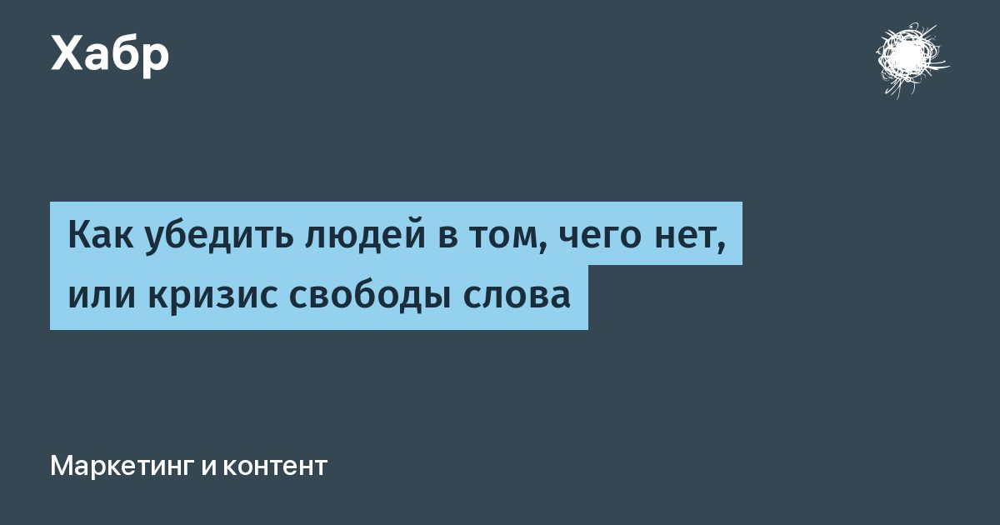

Как убедить людей в том, чего нет, или кризис свободы слова
Многие из вас уже слышали историю о том, как ИИ создал страницу в интернете, после чего в своих ответах начал ссылаться на нее, как на авторитетный источник.
О подобных проблемах можно прочитать, например, в этой статье.
Не говоря уже про многочисленные видео в социальных сетях по этой теме.
Однако, естественно, это ни в коем случае не является проблемой ИИ.
Это является проблемой социологии, а также в первую очередь человека.
Ведь именно люди придумали социально-поведенческую формулу: информация + ссылка на авторитетный источник = правда.
Именно эта формула была заложена в основу, к примеру, Википедии.
Именно эта формула заложена в основу мировоззрения миллиардов людей по всему миру.
И именно этой формулой люди сами стали пользоваться, чтобы обманывать друг друга.
Ведь самое слабое место в ней - авторитетный источник.
До появления социальных сетей авторитетным источником были СМИ.
Однако, с разивитием интернета благодаря социальным сетям актуальная информация стала распространяться быстрее, чем ее публиковали СМИ.
И далее повторилась уже знакомая многим история семьи Ротшильдов и телеграфа.
Напомню, по легенде Ротшильды получали первыми новости о мировых событиях (особенно военных действиях) и могли раньше других предпринять действия для личной выгоды.
Но одной лишь реакцией на происходящее дело не обошлось.
Вскоре люди научились не просто быстро передавать данные, но и контролировать, какие именно данные должны быть распространены.
Это называется пропаганда.
Пропаганду можно назвать неотъемлимой частью цивилизации.
Это обыденное явление, существующее уже тысячи лет.
Помним Спарту и Афины?
Это всего лишь еще один способ контролировать информацию для выгоды определенного круга лиц.
В поисках истины люди придумали стандартную контрмеру против пропаганды - экспертное мнение.
Однако, и это мнение, оказалось, можно контролировать, даже за деньги.
И вновь возник вопрос о поиске истины.
Тогда на сцену вышла честь.
Уважающий себя и уважаемый в обществе человек не станет лгать.
И чем дольше человек уважаем, как придумали люди, тем ценнее его слово.
К слову, методология тоже древняя, уходящая корнями к пророкам.
Однако, и уважаемые люди в кризисных ситуация оказались обыкновенными людьми, у которых тоже были свои интересы, мешающие им говорить всю правду.
И вновь возник вопрос о поиске истины.
Наконец, люди подумали: если человеку доверять нельзя, можно доверить бездушной машине.
Но не учли момент, что машина обучается именно на человеческих формулах социального поведения.
И вот, все это привело нас к самому началу статьи: используя человеческие формулы поведения даже машина перестала излагать истину.
Поскольку новый способ поиска правды на данный момент находится в активном поиске, сосредоточим свое внимание именно на том обмане, которому научился ИИ.
Для общего образования, так сказать, и более объективной гражданской позиции.
Читать далее